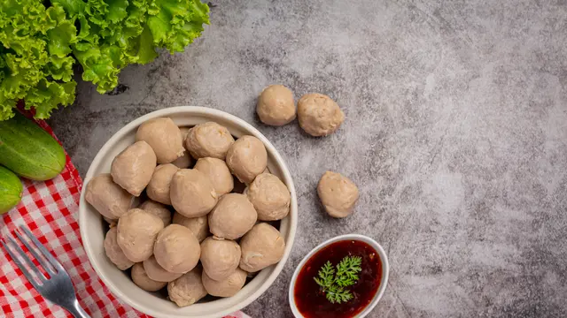

Bakso

Description
Bakso adalah jenis bola daging yang lazim ditemukan pada masakan
Indonesia. Bakso umumnya dibuat dari campuran daging sapi giling dan
tepung tapioka, tetapi ada juga bakso yang terbuat dari daging ayam, babi,
ikan, udang bahkan daging kerbau.
Ingridients
- 250 gram daging sapi
- 100 gram es batu
- 40 gram tepung sagu
- 1,5 sdm bawang goreng
- 1/2 sdm bawang putih goreng
- 1/2 sdt baking powder
- 1,5 sdm garam
- 1 sdt kaldu sapi bubuk
Steps
- Potong kecil daging, simpan di freezer selama 1 jam.
- Masukkan daging sapi dan es batu ke food processor. Haluskan.
-
Masukkan semua bahan bumbu ke adonan. Haluskan kembali sampai adonan
lembut.
- Didihkan air di panci. Matikan kompor.
-
Cetak adonan bakso bulat-bulat. Masukkan ke dalam air panas di panci.
Nyalakan kompor dengan api kecil. Rebus bakso sampai matang. Angkat dan
tiriskan.